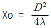
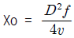
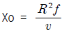
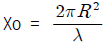

초음파비파괴검사산업기사 (2018-03-04 기출문제)
1과목: 비파괴검사 개론
1. 전하(q)가 있을 때 이 전하로부터 거리가 r만큼 떨어진 곳에서 같은 크기의 전하에 작용하는 힘(F, 자장의 세기)을 나타낸 관계식은? (단, k는 비례상수이다.)
- F = k(q/r)2
- F = k · q(1/r)2
- F = k(r/q)2
- F = k · r(1/q)2
(정답률: 77%)

2. 내부결함 검출에 적절한 최적의 비파괴시험에 대하여 설명한 것 중 옳은 것은?
- 용접부 내부 블로홀의 검출에는 와전류탐상시험이 최적이다.
- 강판 표면과 평행한 면상의 내부결함을 검출하는데는 자분탐상시험이 최적이다.
- 구(球)형의 내부결함이 많은 주조품을 조사하는데는 초음파탐상시험이 최적이다.
- 맞대기용접부나 주조품의 내부에는 여러 형상의 결함이 혼재해 있기 때문에 방사선투과시험과 초음파탐상시험을 병용하는 것이 좋다.
(정답률: 89%)
3. 와전류탐상시험과 비교할 때 침투탐상시험시 신뢰성이 떨어지는 것은?
- 결함의 길이 측정
- 결함의 종류 판별
- 선형결함의 형상 파악
- 선형결함의 깊이 측정
(정답률: 84%)
4. 반도체 스트레인 게이지(Strain gauge)에 대한 설명으로 틀린 것은?
- 게이지율이 높다
- 소형이고 고저항이다.
- 높은 피로수명을 갖고 있다.
- 온도특성이 저항선에 비하여 작다.
(정답률: 67%)
5. 용접 시공 시에 발생하는 균열이 아닌 것은?
- 루트균열
- 비드아래균열
- 재열균열
- 크레이터균열
(정답률: 62%)
6. 고온을 얻을 수 있고, 온도조절이 용이하며 합금원소를 정확히 첨가할 수 있어 특수강의 제조에 사용되는 용해로는?
- 평로
- 고로
- 용선로
- 전기로
(정답률: 68%)
7. 수소저장 합금의 금속간 화합물이 갖추어야 할 조건으로 옳은 것은?
- 평형 수소압 차이가 클 것
- 수소 저장시에는 생성열이 클 것
- 수소의 흡수 방출 속도가 느릴 것
- 활성화가 쉽고, 수소 저장 용량이 클 것
(정답률: 75%)
8. Al 또는 그 합금의 성질에 관한 설명으로 틀린 것은?
- 은백색의 가볍고 전연성이 있는 금속이다.
- 비중은 약 2.7이며, 용융온도는 약 660°C이다.
- 내식성이 좋고 전기 및 열의 전도성이 좋은 금속이다.
- 물과 대기 중에서 내식성이 나쁘고 염산, 황산, 알칼리 등에는 잘 견딘다.
(정답률: 91%)
9. Mn 함량을 12% 정도 함유한 것으로 오스테나이트 조직이며, 인성이 높고 내마멸성도 높아 분쇄기나 롤 등에 사용되는 강은?
- 듀콜강
- 고속도강
- 마레이징강
- 해드필드강
(정답률: 83%)
10. 소결금속 자석으로 MK강이라고도 불리는 알니코(alnico) 자석강의 주요 성분을 올바르게 나타낸 것은?
- Sn, Cr, W
- Mo, S, V
- Ni, Al, Co
- Mn, Au, Sb
(정답률: 84%)
11. 백주철을 열처리로에 넣어 가열해서 탈탄 또는 흑연화 방법으로 제조된 것으로 강도, 인성, 내식성 등이 우수하여 고강도 부품, 유니버설 조인트 등으로 사용되는 주철은?
- 회주철
- 가단주철
- 냉경주철
- 구상흑연주철
(정답률: 66%)
12. 다음 중 과공석강의 탄소함유량은 약 몇 % 인가?
- 0.025% 이상 ~ 0.80% 이하
- 0.80% 이상 ~ 2.0% 이하
- 2.0% 이상 ~ 4.30% 이하
- 4.30% 이상 ~ 6.67% 이하
(정답률: 85%)
13. 금속의 격자결함 중 면결함에 해당되는 것은?
- 적층결함
- 주조결함
- 원자공공
- 격자간 원자
(정답률: 72%)
14. 비중이 약 4.51, 강도가 크고, 항공이, 로켓 재료로 널리 사용되며, 용융점이 강(Steel)보다 높은 금속은?
- W
- Co
- Ti
- Sn
(정답률: 90%)
15. 금속이 일반적으로 갖는 특성으로 틀린 것은?
- 전성과 연성이 나쁘다.
- 고유의 광택을 가진다.
- 전기 및 열의 양도체이다.
- 고체상태에서 결정구조를 갖는다.
(정답률: 80%)
16. 교류 아크 용접기 AW - 300에서 정격 2차 전류 값은 얼마인가?
- 200A
- 300A
- 400A
- 500A
(정답률: 77%)
17. 일반적인 논 가스 아크 용접(non gas arc welding)의 특징으로 틀린 것은?
- 용접장치가 간단하며 운반이 편리하다.
- 바람이 있는 옥외에서는 작업이 불가능하다.
- 용접 비드가 아름답고 슬래그의 박리성이 좋다.
- 보호가스의 발생이 많아 용접선이 잘 보이지 않는다.
(정답률: 65%)
18. 피복 아크 용접에서 무부하전압 80V, 아크전압 30V, 아크전류 200A라 하고, 이때의 내부손실을 4kW라 하면 용접기의 효율은 몇 %인가?
- 60
- 70
- 80
- 90
(정답률: 72%)
19. 용착법 중 용접 이음부가 짧은 경우나, 변형과 잔류응력이 크게 문제되지 않을 때 이용되며 수축과 잔류응력이 용접의 시작부분보다 끝부분이 더 큰 용착법은?
- 대칭법
- 후퇴법
- 전진법
- 비석법
(정답률: 72%)
20. 일반적인 용접작업에서 비틀림 변형을 줄이기 위한 시공 상의 주의사항으로 틀린 것은?
- 지그를 활용할 것
- 이음부의 맞춤을 정확히 할 것
- 구속이 큰 부분에 집중 용접을 할 것
- 표면 덧붙이를 필요 이상 주지 말 것
(정답률: 75%)
2과목: 초음파탐상검사 원리 및 규격
21. 초음파 빔의 원거리 음장영역에서 재질내의 에너지 감쇠는 어떻게 표현되는가?
- 기하학적 평균
- 지수함수적 증가
- 지수함수적 감소
- 등차중앙
(정답률: 90%)
22. 수직입사에 의한 초음파의 반사와 통과에 중요한 인자인 음향임피던스에 대한 설명 중 올바른 것은?
- 음향임피던스는 굴절각과 음압왕복통과율의 계산에 사용한다.
- 음향임피던스는 반사각 계산에 사용한다.
- 음향임피던스는 밀도와 음속의 곱으로 표시되고 음압반사율과 에너지의 계산에 사용된다.
- 음향임피던스는 두 매질 사이의 반사율이다.
(정답률: 84%)
23. 초음파 두께측정기는 초음파 펄스의 어떤 정보를 이용하여 시험체의 두께를 측정하는가?
- 초음파의 감쇠량
- 초음파의 펄스폭
- 초음파의 강약
- 시험체의 평행면 간을 왕복하는 시간
(정답률: 75%)
24. 근거리음장거리를 구하는 공식으로 틀린 것은?(단, Xo : 근거리음장거리, D : 진동자의 직경, R : 진동자의 반경 v : 속도, λ : 파장, f : 주파수 이다.)




(정답률: 54%)
25. 종파가 아크릴에서 철강재로 경사 입사할 때 종파의 임계각은 약 얼마인가?
- 26°
- 36°
- 46°
- 52°
(정답률: 56%)
26. 결정립이 조대한 시험편을 초음파탐상시험할 때 투과력을 높이기 위해서는 어떤 주파수를 사용하는 것이 좋은가?
- 1MHz
- 2.25MHz
- 3MHz
- 5MHz
(정답률: 78%)
27. 동일 조건으로 검사하여 원거리음장 영역에 존재하는 금속 내부의 원형평면 결함의 결함지시가 가장 큰 것은?
- 결함 면적 3mm2이고, 검사체 표면으로부터 10mm 지점
- 결함 면적 6mm2이고, 검사체 표면으로부터 20mm 지점
- 결함 면적 9mm2이고, 검사체 표면으로부터 30mm 지점
- 결함 면적 12mm2이고, 검사체 표면으로부터 40mm 지점
(정답률: 67%)
28. 동일한 크기의 결함인 경우 초음파탐상시험으로 가장 발견하기 쉬운 결함은?
- 시험체 내부에 있는 구형의 결함
- 초음파의 진행방향에 평행인 결함
- 초음파의 진행방향에 수직인 결함
- 이종 물질들이 혼입된 결함
(정답률: 85%)
29. 강의 V개선 맞대기 용접부(수동용접)의 경사각탐상시험에 대해 기술한 것으로 옳은 것은?
- 블로홀, 슬래그 혼입 및 용입불량 중에 가장 높은 결함에코가 검출되는 것은 블로홀이다.
- 블로홀에서는 입사된 초음파는 여러 방향으로 반사되기 때문에 결함에코높이는 높다.
- 용입불량에서는 초음파는 루트면에 직각인 코너에서 2회 반사하여 감쇠된 약한 결함에코가 나타난다.
- 용입불량은 루트면이 그대로 남아 있기 때문에 초음파의 반사조건이 좋다.
(정답률: 58%)
30. 비파괴검사법 중 체적검사형태인 방사선 투과검사와 초음파탐상검사를 비교하였을 때 초음파 탐상검사의 장점이 아닌 것은?
- 탐상결과를 즉시 알 수 있으며 결함의 위치와 크기 탐지가 가능하다.
- 투과능력이 크므로 수 미터(m) 정도의 두꺼운 부분도 검사가 가능하다.
- 피검체 전반에 미세한 기공이나 편석, 개재물이 있어도 탐상이 가능하다.
- 감도가 높으므로 아주 작은 균열과 같은 미세한 결함 검출에 효과적이다.
(정답률: 62%)
31. 초음파 펄스 반사법에 의한 두께 측정 방법(KS B ⑤36)의 초음파 두께 측정 대비시험편(RB-T)의 두께 허용 범위는?
- ±0.3mm
- ±0.2mm
- ±0.1mm
- ±0.⑤mm
(정답률: 60%)
32. 보일러 및 압력용기에 대한 표준초음파 탐상검사(ASME Sec. V, Art.23 SA-609)에 규정된 품질 등급 구분의 수는?
- 4개
- 7개
- 10개
- 보통급과 특급 각각 5개
(정답률: 68%)
33. 알루미늄의 맞대기 용접부의 초음파경사각탐상시험방법(KS B 0897)에서 모재의 두께가 60mm이고, A종 지시를 2류 판정으로 내려질 경우 허용되는 지시의 최대 길이는 얼마인가?
- 6.0mm 이하
- 10.0mm 이하
- 15.0mm 이하
- 20.0mm 이하
(정답률: 57%)
34. 초음파탐상장치의 성능측정 방법(KS B ⑤34)에서 초음파 탐상기의 성능측정 항목으로 틀린 것은?
- 증폭 직선성
- 시간축 직선성
- 근거리 분해능
- 불감대
(정답률: 80%)
35. 보일러 및 압력용기에 대한 표준초음파탐상검사(ASME Sec. V, Art.23 SA-435)에서 수직빔탐상 적용 재료로 옳은 것은?
- 두께 3.0mm이상 특수용 클래드 강판 및 합금강판
- 두께 12.5mm이상 특수용 클래드 강판 및 합금강판
- 두께 3.0mm이상 압연된 완전 탈산(Killed) 탄소강판 및 합금강판
- 두께 12.5mm이상 압연된 완전 탈산(Killed) 탄소강판 및 합금강판
(정답률: 59%)
36. 강 용접부의 초음파탐상 시험방법(KS B 0896)에서 경사각 탐상 시 흠의 횡단면 위치는 탐촉자가 어느 위치에 있을 때 표시하도록 규정하고 있는가?
- 최대 에코가 얻어지는 위치
- 흠의 지시길이의 중간 위치
- 흠의 지시길이가 끝나는 위치
- 흠의 지시길이가 시작되는 위치
(정답률: 66%)
37. 강 용접부의 초음파탐상 시험방법(KS B 0896)의 탠덤탐상에서 Ⅲ영역 이상을 평가대상으로 할 때 어떤 검출 레벨을 지정하는가?
- L 검출 레벨
- M 검출 레벨
- H 검출 레벨
- (H+6dB) 검출 레벨
(정답률: 69%)
38. 강 용접부의 초음파탐상 시험방법(KS B 0896)의 적용범위에 관한 사항 중 틀린 것은?
- 두께 6mm 이상의 페라이트계 강의 완전 용입 용접부에 적용한다.
- 펄스 반사법을 사용한 기본표시의 초음파탐상기로 탐상한다.
- 자동으로 실시하는 경우의 지시 검출방법, 위치 및 치수의 측정방법에 대하여 규정한다.
- 강관의 제조 공정 중의 이음 용접부에는 적용하지 않는다.
(정답률: 36%)
39. 보일러 및 압력용기의 재료에 대한 초음파탐상검사(ASME Sec.V Art.5)에 의거 용접부에 대한 초음파탐상시험을 시행하기 위해 필요한 기본 교정시험편을 제작할 경우에 대한 설명으로 올바른 것은?
- 시험편 표면은 시험 대상물의 표면 상태를 대표하는 정도이면 된다.
- 시험편 재료와 시험 대상물의 열처리상태가 달라도 무방하다.
- 시험편 재료는 시험 대상물의 소재와 시방이 달라도 된다.
- 시험편 재료는 시험 대상물에서 잘라낸 것이라면 재료에 대한 품질검사는 실시하지 않아도 된다.
(정답률: 77%)
40. 초음파탐상 시험용 표준시험편(KS B 0831)에 따른 STB-G형 시험편의 탐상 대상물로 부적당한 것은?
- 극후판
- 조강
- 단조품
- 관용접부
(정답률: 48%)
3과목: 초음파탐상검사 시험
41. 종파의 속도가 5800m/s인 재료에서 기본 공진주파수가 290kHz이라면 시험체의 두께는 얼마인가?
- 5mm
- 10mm
- 20mm
- 40mm
(정답률: 53%)
42. 거리진폭교정곡선(DAC)은 무엇 때문에 생긴 신호의 손실을 보상하는 방법인가?
- 시험체의 길이
- 시험체의 자속밀도
- 시험체 속에서의 음속
- 탐상거리의 증가에 따른 감쇠
(정답률: 82%)
43. 펄스반사 초음파 탐상기에서 진동자를 작동시키는 전압을 공급해 주는 부분은?
- 증폭기
- 수신기
- 송신기
- 동기장치
(정답률: 55%)
44. 가장 기본적인 펄스-에코 방식의 초음파탐상 장비는?
- A-Scan
- B-Scan
- C-Scan
- M-Scan
(정답률: 96%)
45. 초음파탐상에 지장을 주는 방해 에코가 발생하는 경우가 아닌 것은?
- 펄스 반복률이 매우 높을 때
- 음향임피던스가 제로(0)일 때
- 굴절각이 큰 경우 빔 퍼짐이 발생할 때
- 결정립이 조대한 시험체를 고감도로 검사할 때
(정답률: 87%)
46. 직접접촉법으로 초음파탐상시험을 실시하는데 검사물 표면이 아주 거칠 때 주로 사용되는 접촉매질은?
- 물
- 공기
- 물 또는 공기
- 글리세린 또는 물유리
(정답률: 83%)
47. 초음파탐상기의 조정기 중 리젝션(rejection) 손잡이를 조정하면 나타나는 현상으로 옳은 것은?
- 분해능이 나빠진다.
- 파형을 평활하게 한다.
- 잡음 에코를 억제한다.
- 증폭의 직선성을 높여준다.
(정답률: 66%)
48. 경사각탐상시험을 실시할 경우 탐상방향을 선정할 때 기본적으로 고려해야 할 사항으로 틀린 것은?
- 예상되는 결함의 위치 및 방향을 고려하여 결함의 초음파 반사면과 평행이 되는 시험체 표면을 탐상면으로 정한다.
- 시험체의 구조상 결함의 초음파 반사면이 수직이 되는 시험체 표면을 탐상면으로 정하는 것이 불가능할 경우 1회 반사법 등을 고려하여 탐상면을 결정한다.
- 횡파사각탐촉자를 사용할 경우 굴절각 40°이상 70°이하 범위에서 초음파가 결함면의 수직에 근사한 방향으로 입사할 수 있는 굴절각을 선정한다.
- 결함의 발생위치(시험대상부분) 전체에 영향을 미칠 수 있도록 탐촉자의 주사범위를 말한다.
(정답률: 58%)
49. 전자기음향탐촉자(Electro-Magnetic Acoustic Transducer : EMAT)에 관한 다음 설명 중에서 올바른 것은?
- 전자기적인 방법을 사용하며, 시험체 내에서 전자파 형태로 전파된다.
- 복합재료 및 목재와 같은 재료에도 직접 적용이 가능하다.
- 비전도체 재료 검사에 적합하다.
- 접촉매질이 필요하지 않아 비접촉식 탐상에 적합하다.
(정답률: 60%)
50. 경사각탐상의 기본주사 방법이 아닌 것은?
- 좌우 주사
- 두갈래 주사
- 전후 주사
- 목돌림 주사
(정답률: 85%)
51. 용접부에 대한 초음파탐상시험에서 A-스캔법에 의해 지시가 나타났다. 지시의 양상은 아주 예리하고, 결함을 중심으로 처음 위치에서보다 비스듬하게 초음파를 입사시킨 결과 지시의 에코높이가 현저히 떨어졌다. 어떤 형태의 결함인가?
- 균열성
- 기공성
- 잡음성
- 개재물성
(정답률: 67%)
52. 경사각 탐상의 주사방법 중 복합주사 방법이 아닌 것은?
- 전후 주사
- 종방향 주사
- 지그재그 주사
- 경사평행 주사
(정답률: 52%)
53. 용접부탐상시 초음파탐촉자의 주파수 선정에 대한 설명으로 옳은 것은?
- 표면거칠기가 클 때는 높은 주파수를 선정한다.
- 시험체의 결정립이 클 때는 높은 주파수를 선정한다.
- 분해능을 높이기 위해서는 높은 주파수를 선정한다.
- 탐상속도를 높이기 위해서는 높은 주파수의 작은 탐촉자를 선정한다.
(정답률: 78%)
54. 결함검출 확률(probability of detection : POD)에 영향을 미치는 인자가 아닌 것은?
- 검사시스템의 성능과 교정
- 시험환경 및 결함의 방향성
- 검사기술자의 지식
- 표준 및 대비시험편의 개수
(정답률: 88%)
55. 초음파의 전달손실의 원인이 아닌 것은?
- 표면거칠기
- 진동자의 크기
- 곡률의 영향
- 저면 및 탐상면에서의 반사손실
(정답률: 80%)
56. 두께가 25mm인 철판을 굴절각이 70°인 경사각탐촉자로 탐상하여 빔의 궤적이 87.7mm 되는 곳에서 결함에코가 나왔다면 결함의 깊이는?
- 10mm
- 20mm
- 30mm
- 40mm
(정답률: 56%)
57. 초음파탐상장치 수신부의 구성요소가 아닌 것은?
- 증폭기
- 감쇠기
- 정류기
- 측정범위
(정답률: 74%)
58. 초음파탐상장비에서 송신기가 탐촉자의 압전진동자에 공급해주는 전압펄스는 일반적으로 얼마인가?
- 1 ~ 10V
- 10 ~ 100V
- 300 ~ 1000V
- 1000 ~ 10000V
(정답률: 49%)
59. 탐상면이 곡률을% 갖는 경우 탐촉자와 탐상면의 접촉 면적에 따라 변할 수 있는 것은?
- 속도가 변한다.
- 주파수가 변한다
- 분산각이 변한다.
- 아무 변화가 없다.
(정답률: 69%)
60. 다음 중 C 주사 표시법에 관한 설명으로 옳은 것은?
- 결함의 깊이 정보를 알 수 있다.
- 결함의 평면적인 분포를 파악할 수 있다.
- 초음파의 세기(또는 진폭)와 도달시간을 동시에 기록한다.
- 한 선을 따라 측정한 초음파 신호를 측정위치에 따라 도달시간을 기록한다.
(정답률: 73%)